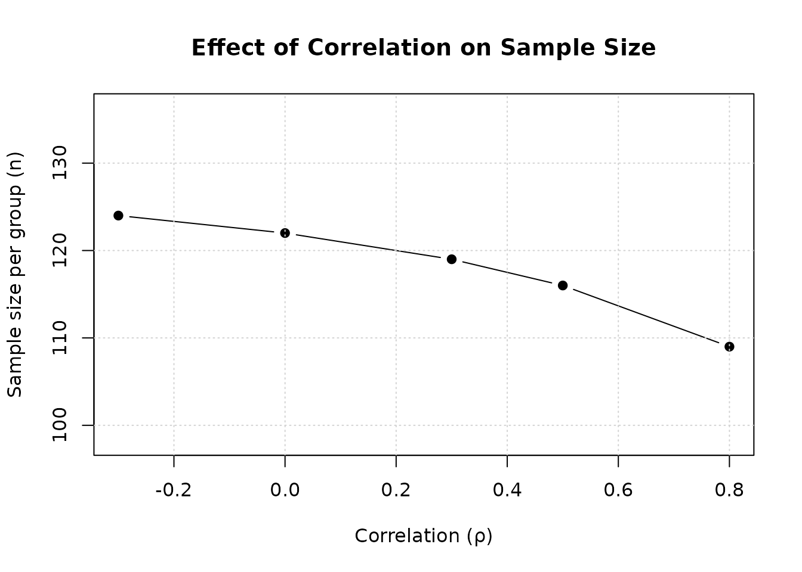

Two Binary Co-Primary Endpoints (Asymptotic Methods)
Source:vignettes/two-binary-endpoints-approx.Rmd
two-binary-endpoints-approx.RmdOverview
This vignette demonstrates sample size calculation for clinical trials with two co-primary binary endpoints using asymptotic normal approximation methods. The methodology is based on Sozu et al. (2010).
Background
Clinical Context
Binary co-primary endpoints are common in:
Migraine trials: Relief from headache (yes/no) + Relief from the most bothersome migraine-related symptom (yes/no)
Psoriasis trials: At least 75% improvement in the score on the psoriasis area-and-severity index (PASI) (yes/no) + Score on the physician’s global assessment of 0 or 1 (yes/no)
Primary myelofibrosis trials: Clinically relevant complete haematological response (yes/no) + Lack of progression of clinical symptoms (yes/no)
When to Use Asymptotic Methods
Asymptotic (normal approximation) methods are appropriate when:
Sample sizes are large (typically )
Probabilities are not extreme ()
Computational efficiency is important
For small to medium sample sizes or extreme probabilities, use
exact methods based on Homma and Yoshida (2025), which
can be computed using exact approaches without any approximations (see
vignette("two-binary-endpoints-exact")).
Statistical Framework
Model and Assumptions
Consider a two-arm parallel-group superiority trial comparing treatment (group 1) with control (group 2). Let and denote the sample sizes in the two groups, with allocation ratio (i.e., total sample size is ).
For subject () in group (: treatment, : control), we observe two binary outcomes:
where indicates success and indicates failure for outcome .
Marginal probabilities: Let denote the success probability for outcome in group :
For details on the joint distribution of , see Homma and Yoshida (2025) Section 2.1 or Sozu et al. (2010).
Correlation Structure
The correlation between the two binary outcomes in group is defined as (Homma and Yoshida, 2025):
where is the joint probability that both outcomes are successful.
Practical interpretation: means subjects who succeed on outcome 1 are more likely to succeed on outcome 2.
Valid correlation range: Because , the correlation is not free to range over , but is bounded by (Homma and Yoshida, 2025, Equation 2):
where:
If , then , whereas for .
These bounds can be computed using the
corrbound2Binary() function in this package.
Hypothesis Testing
We test superiority of treatment over control for both endpoints. The endpoints for testing are the risk differences:
For endpoint :
For co-primary endpoints (intersection-union test):
Null hypothesis: (at least one null is true)
Alternative hypothesis: (both alternatives are true)
Decision rule: Reject at level if and only if both and are rejected at level .
Test Statistics
Several test statistics are available for binary endpoints. We focus on asymptotic normal approximation methods following Sozu et al. (2010).
Method 1: Standard Normal Approximation (AN)
For endpoint k, the test statistic without continuity correction is (Equation 3 in Sozu et al., 2010):
where:
and is the pooled proportion under the null hypothesis.
Under , asymptotically follows .
Power formula (Equation 4 in Sozu et al., 2010):
Under with true probabilities and , the power for a single endpoint is:
where:
- is the true risk difference
- with
- is the quantile of the standard normal distribution
Method 2: Normal Approximation with Continuity Correction (ANc)
To improve finite-sample performance, Yates’s continuity correction is applied (Equation 5 in Sozu et al., 2010):
where:
Power formula:
Joint Distribution and Correlation
Under , asymptotically follows a bivariate normal distribution:
The correlation between test statistics depends on , , and the marginal probabilities. For details on the derivation and approximation formulas, see Sozu et al. (2010) and Homma and Yoshida (2025). This approximation is implemented in the package functions.
Replicating Sozu et al. (2010) Table III
Table III from Sozu et al. (2010) shows sample sizes for various probability combinations and correlations using the AN, ANc, AS, and ASc test methods. Note that exact methods based on Fisher’s exact test (Homma and Yoshida, 2025) can provide more accurate sample sizes for small to medium sample sizes, but are not included in this table as they were not available in Sozu et al. (2010).
The notation used in the function is: p11 =
,
p12 =
,
p21 =
,
p22 =
,
where the first subscript denotes the group (1 = treatment, 2 = control)
and the second subscript denotes the endpoint (1 or 2).
# Recreate Sozu et al. (2010) Table III
library(dplyr)
library(tidyr)
library(readr)
param_grid_bin_ss <- tibble(
p11 = c(0.70, 0.87, 0.90, 0.95),
p12 = c(0.70, 0.70, 0.90, 0.95),
p21 = c(0.50, 0.70, 0.70, 0.90),
p22 = c(0.50, 0.50, 0.70, 0.90)
)
result_bin_ss <- do.call(
bind_rows,
lapply(c("AN", "ANc", "AS", "ASc"), function(test) {
do.call(
bind_rows,
design_table(
param_grid = param_grid_bin_ss,
rho_values = c(-0.3, 0, 0.3, 0.5, 0.8),
r = 1,
alpha = 0.025,
beta = 0.2,
endpoint_type = "binary",
Test = test
) %>%
mutate(Test = test)
)
})
) %>%
mutate_at(vars(starts_with("rho_")), ~ . / 2) %>%
pivot_longer(
cols = starts_with("rho_"),
names_to = "rho",
values_to = "N",
names_transform = list(rho = parse_number)
) %>%
pivot_wider(names_from = Test, values_from = N) %>%
drop_na(AN, ANc, AS, ASc) %>%
as.data.frame()
kable(result_bin_ss,
caption = "Table III: Sample Size per Group (n) for Two Co-Primary Binary Endpoints (α = 0.025, 1-β = 0.80)^a,b^",
digits = 0,
col.names = c("p₁,₁", "p₁,₂", "p₂,₁", "p₂,₂", "ρ", "AN", "ANc", "AS", "ASc"))| p₁,₁ | p₁,₂ | p₂,₁ | p₂,₂ | ρ | AN | ANc | AS | ASc |
|---|---|---|---|---|---|---|---|---|
| 1 | 1 | 0 | 0 | 0 | 124 | 134 | 124 | 134 |
| 1 | 1 | 0 | 0 | 0 | 122 | 132 | 122 | 132 |
| 1 | 1 | 0 | 0 | 0 | 119 | 129 | 119 | 129 |
| 1 | 1 | 0 | 0 | 0 | 116 | 126 | 116 | 126 |
| 1 | 1 | 0 | 0 | 1 | 109 | 119 | 109 | 118 |
| 1 | 1 | 1 | 0 | 0 | 121 | 131 | 119 | 130 |
| 1 | 1 | 1 | 0 | 0 | 118 | 128 | 116 | 127 |
| 1 | 1 | 1 | 0 | 0 | 115 | 125 | 113 | 124 |
| 1 | 1 | 1 | 1 | 0 | 81 | 91 | 78 | 88 |
| 1 | 1 | 1 | 1 | 0 | 79 | 89 | 76 | 86 |
| 1 | 1 | 1 | 1 | 0 | 77 | 87 | 74 | 84 |
| 1 | 1 | 1 | 1 | 1 | 72 | 82 | 69 | 79 |
| 1 | 1 | 1 | 1 | 0 | 571 | 610 | 557 | 596 |
| 1 | 1 | 1 | 1 | 0 | 556 | 596 | 543 | 582 |
| 1 | 1 | 1 | 1 | 0 | 542 | 581 | 529 | 568 |
| 1 | 1 | 1 | 1 | 1 | 507 | 546 | 495 | 534 |
a AN: Asymptotic normal test without continuity correction; ANc: Asymptotic normal test with continuity correction; AS: Arcsine transformation without continuity correction; ASc: Arcsine transformation with continuity correction.
b Some values may differ by 1-2 subjects from Sozu et al. (2010) Table III due to numerical differences in computing the bivariate normal cumulative distribution function between SAS and R implementations. Power calculations at the reported sample sizes confirm the accuracy of the values presented here.
Key Findings
Effect of correlation:
- Positive correlation () reduces required sample size
- Negative correlation () increases required sample size
- Zero correlation () provides intermediate sample size
Test method comparison:
- AN: Generally smallest sample size, most efficient
- ANc: Slightly larger than AN due to continuity correction
- AS: Similar to AN for moderate probabilities
- ASc: Largest sample size, most conservative
Basic Usage Examples
Example 1: Equal Effect Sizes
Calculate sample size when both endpoints have equal effect sizes:
# Both endpoints: 70% vs 50% (20% difference)
# p_{1,1} = p_{1,2} = 0.7 (treatment group)
# p_{2,1} = p_{2,2} = 0.5 (control group)
ss_equal <- ss2BinaryApprox(
p11 = 0.7, p12 = 0.7, # Treatment group
p21 = 0.5, p22 = 0.5, # Control group
rho1 = 0.5, # Correlation in treatment group
rho2 = 0.5, # Correlation in control group
r = 1, # Balanced allocation
alpha = 0.025,
beta = 0.2,
Test = "AN"
)
print(ss_equal)
#>
#> Sample size calculation for two binary co-primary endpoints
#>
#> n1 = 116
#> n2 = 116
#> N = 232
#> p (group 1) = 0.7, 0.7
#> p (group 2) = 0.5, 0.5
#> rho = 0.5, 0.5
#> allocation = 1
#> alpha = 0.025
#> beta = 0.2
#> Test = ANNote: In the function, p11 corresponds
to
(success probability for endpoint 1 in treatment group),
p12 to
,
p21 to
,
and p22 to
.
Example 2: Unequal Effect Sizes
When effect sizes differ, the endpoint with smaller effect dominates:
# Endpoint 1: 75% vs 65% (10% difference)
# Endpoint 2: 80% vs 60% (20% difference)
ss_unequal <- ss2BinaryApprox(
p11 = 0.75, p12 = 0.80,
p21 = 0.65, p22 = 0.60,
rho1 = 0.3, rho2 = 0.3,
r = 1,
alpha = 0.025,
beta = 0.2,
Test = "AN"
)
print(ss_unequal)
#>
#> Sample size calculation for two binary co-primary endpoints
#>
#> n1 = 329
#> n2 = 329
#> N = 658
#> p (group 1) = 0.75, 0.8
#> p (group 2) = 0.65, 0.6
#> rho = 0.3, 0.3
#> allocation = 1
#> alpha = 0.025
#> beta = 0.2
#> Test = AN
# Compare with individual endpoint sample sizes
ss_ep1 <- ss1BinaryApprox(p1 = 0.75, p2 = 0.65, r = 1,
alpha = 0.025, beta = 0.2, Test = "AN")
ss_ep2 <- ss1BinaryApprox(p1 = 0.80, p2 = 0.60, r = 1,
alpha = 0.025, beta = 0.2, Test = "AN")
cat("Single endpoint 1 sample size:", ss_ep1$n2, "\n")
#> Single endpoint 1 sample size: 329
cat("Single endpoint 2 sample size:", ss_ep2$n2, "\n")
#> Single endpoint 2 sample size: 82
cat("Co-primary sample size:", ss_unequal$n2, "\n")
#> Co-primary sample size: 329The co-primary design requires approximately the same sample size as the endpoint with smaller effect size.
Example 3: Effect of Correlation
Demonstrate how correlation affects sample size:
# Fixed effect sizes: p_{1,1} = p_{1,2} = 0.7, p_{2,1} = p_{2,2} = 0.5
p11 <- 0.7
p21 <- 0.5
p12 <- 0.7
p22 <- 0.5
# Range of correlations
rho_values <- c(-0.3, 0, 0.3, 0.5, 0.8)
ss_by_rho <- sapply(rho_values, function(rho) {
ss <- ss2BinaryApprox(
p11 = p11, p12 = p12,
p21 = p21, p22 = p22,
rho1 = rho, rho2 = rho,
r = 1,
alpha = 0.025,
beta = 0.2,
Test = "AN"
)
ss$n2
})
result_df <- data.frame(
rho = rho_values,
n_per_group = ss_by_rho,
N_total = ss_by_rho * 2
)
kable(result_df,
caption = "Sample Size vs Correlation (p₁,₁ = p₁,₂ = 0.7, p₂,₁ = p₂,₂ = 0.5)",
col.names = c("ρ", "n per group", "N total"))| ρ | n per group | N total |
|---|---|---|
| -0.3 | 124 | 248 |
| 0.0 | 122 | 244 |
| 0.3 | 119 | 238 |
| 0.5 | 116 | 232 |
| 0.8 | 109 | 218 |
# Plot
plot(rho_values, ss_by_rho,
type = "b", pch = 19,
xlab = "Correlation (ρ)",
ylab = "Sample size per group (n)",
main = "Effect of Correlation on Sample Size",
ylim = c(min(ss_by_rho) * 0.9, max(ss_by_rho) * 1.1))
grid()
Interpretation: Higher positive correlation substantially reduces required sample size.
Example 4: Unbalanced Allocation
Calculate sample size with unequal group allocation:
# 2:1 allocation (treatment:control)
ss_unbalanced <- ss2BinaryApprox(
p11 = 0.7, p12 = 0.7,
p21 = 0.5, p22 = 0.5,
rho1 = 0.5, rho2 = 0.5,
r = 2, # 2:1 allocation
alpha = 0.025,
beta = 0.2,
Test = "AN"
)
print(ss_unbalanced)
#>
#> Sample size calculation for two binary co-primary endpoints
#>
#> n1 = 172
#> n2 = 86
#> N = 258
#> p (group 1) = 0.7, 0.7
#> p (group 2) = 0.5, 0.5
#> rho = 0.5, 0.5
#> allocation = 2
#> alpha = 0.025
#> beta = 0.2
#> Test = AN
cat("Total sample size:", ss_unbalanced$N, "\n")
#> Total sample size: 258Power Verification
Verify that calculated sample sizes achieve target power:
# Use result from Example 1
power_result <- power2BinaryApprox(
n1 = ss_equal$n1,
n2 = ss_equal$n2,
p11 = 0.7, p12 = 0.7,
p21 = 0.5, p22 = 0.5,
rho1 = 0.5, rho2 = 0.5,
alpha = 0.025,
Test = "AN"
)
cat("Target power: 0.80\n")
#> Target power: 0.80
cat("Achieved power (Endpoint 1):", round(power_result$power1, 4), "\n")
#> Achieved power (Endpoint 1): 0.8798
cat("Achieved power (Endpoint 2):", round(power_result$power2, 4), "\n")
#> Achieved power (Endpoint 2): 0.8798
cat("Achieved power (Co-primary):", round(power_result$powerCoprimary, 4), "\n")
#> Achieved power (Co-primary): 0.8016Comparison of Test Methods
Compare the four asymptotic test methods:
# Fixed design parameters
p11 <- 0.80
p12 <- 0.70
p21 <- 0.55
p22 <- 0.45
rho <- 0.7
# Calculate for each method
methods <- c("AN", "ANc", "AS", "ASc")
comparison <- lapply(methods, function(method) {
ss <- ss2BinaryApprox(
p11 = p11, p12 = p12,
p21 = p21, p22 = p22,
rho1 = rho, rho2 = rho,
r = 1,
alpha = 0.025,
beta = 0.2,
Test = method
)
data.frame(
Method = method,
n_per_group = ss$n2,
N_total = ss$N
)
})
comparison_table <- bind_rows(comparison)
kable(comparison_table,
caption = "Comparison of Test Methods (p₁,₁ = p₁,₂ = 0.7, p₂,₁ = p₂,₂ = 0.5, ρ = 0.5)")| Method | n_per_group | N_total |
|---|---|---|
| AN | 69 | 138 |
| ANc | 77 | 154 |
| AS | 69 | 138 |
| ASc | 76 | 152 |
Practical Recommendations
Design Considerations
Estimate correlation: Use pilot data or historical information; be conservative if uncertain
Consider asymmetric effects: Use actual effect sizes rather than assuming equality
Balanced allocation: Generally more efficient unless practical constraints require otherwise
Test method selection: AN is most common; use continuity correction for added conservatism
Sample size sensitivity: Calculate for range of plausible correlations and effect sizes
When to Use Exact Methods Instead
Use exact methods (ss2BinaryExact) based on Homma and
Yoshida (2025) when:
- Small to medium sample sizes ()
- Extreme probabilities ( or )
- Strict Type I error control required
- Regulatory preference for exact tests
Exact methods using Fisher’s exact test can provide more accurate sample sizes and better Type I error control in these situations.
References
Homma, G., & Yoshida, T. (2025). Exact power and sample size in clinical trials with two co-primary binary endpoints. Statistical Methods in Medical Research, 34(1), 1-19.
Sozu, T., Sugimoto, T., & Hamasaki, T. (2010). Sample size determination in clinical trials with multiple co-primary binary endpoints. Statistics in Medicine, 29(21), 2169-2179.